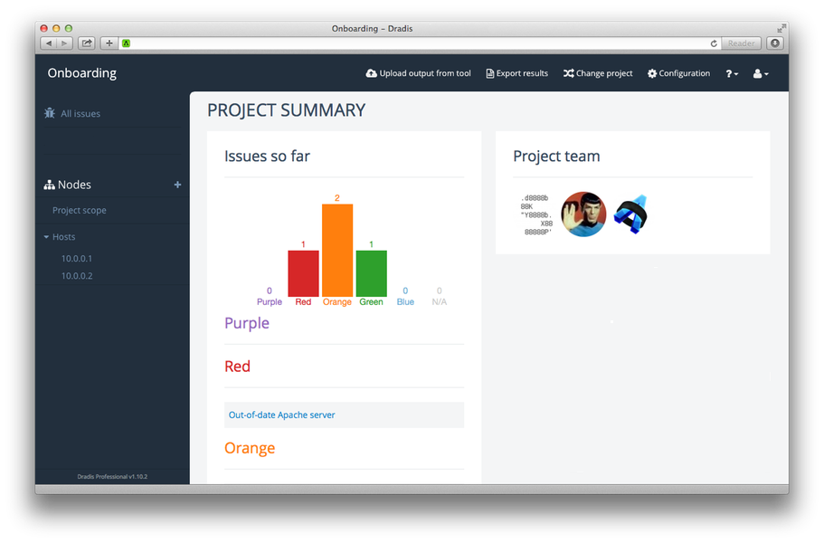
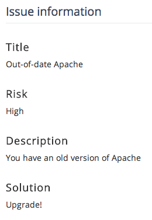
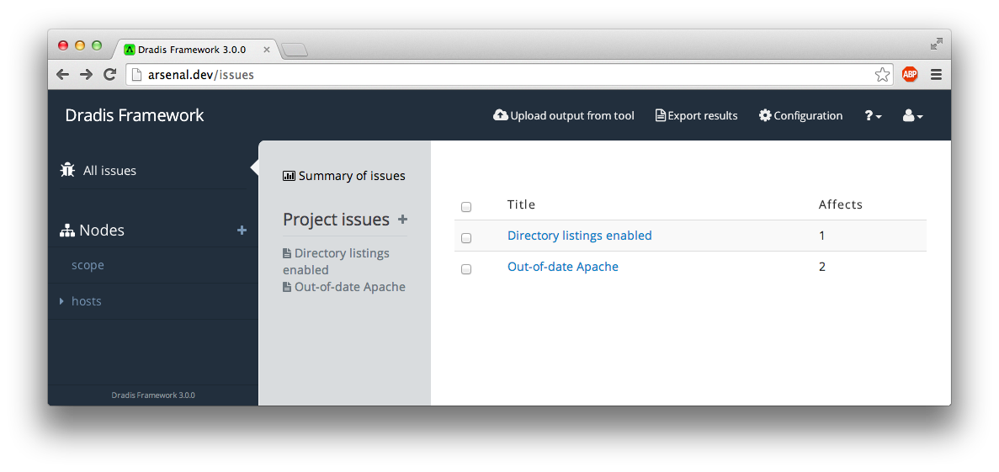
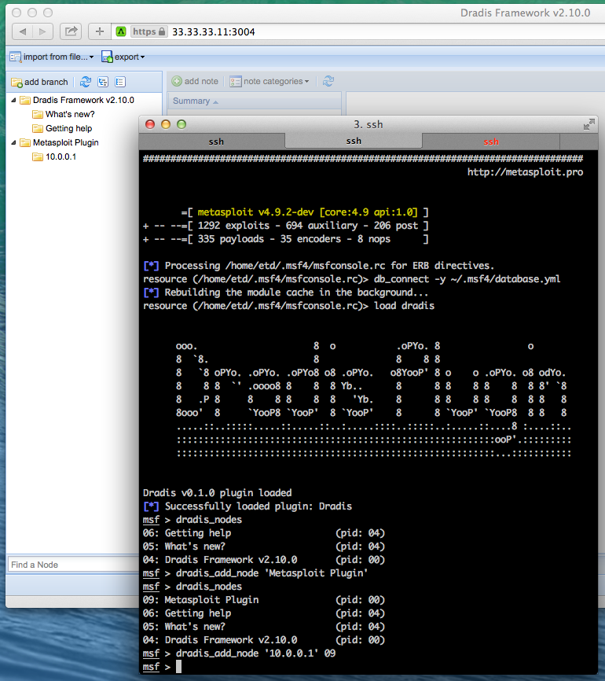

Dradis 3.0
Packed with goodness
By Daniel Martin / @etdsoft
Agenda
- New interface
- Gemfile.plugins
- HTTP API
- Client bindings
- New plugins: Qualys, PDF reports...
You will ask questions

New interface
Issues/Evidence
Issue is the part that rarely changes
Evidence is different each time
Issues Library
Shows the list of issues in the project
At the Node level
Notes, Evidence and Attachments
Gemfile.plugins
Gemfile controls Ruby dependencies.
In Dradis 3 we're adding Gemfile.plugins.
Each plugin in its own repo.
Easy to add custom plugins.
Sample
# General add-ons
gem 'dradis-api'
# Export plugin
gem 'dradis-html_export', github: 'dradis/dradis-html_export'
gem 'dradis-pdf_export', github: 'dradis/dradis-pdf_export'
# Import plugins
gem 'dradis-mediawiki', path: '../dradis-mediawiki'
# Upload plugins
gem 'dradis-burp', path: '../dradis-burp'
gem 'dradis-nessus', path: '../dradis-nessus'
# Themes
# gem 'dradis-theme_snowcrash', path: '../dradis-theme_snowcrash'
HTTP API
- Implemented as a Gem
- Endpoints and
curlexamples - Get it at: dradis/dradis-api
In Gemfile.plugins
gem 'dradis-api', github: 'dradis/dradis-api'
And
$ bundle install
Endpoints
/api/issues(.json)
/api/nodes(.json)
/api/nodes/[node_id]/evidence(.json)
/api/nodes/[node_id]/notes(.json)
application/json- Versioned API via
Acceptheader:Accept: application/vnd.dradisapi; v=1Not needed to use for the current version.
Endpoints: Nodes
To get the list of nodes:
$ curl -u 'user:password' 'http://dradisframework.dev/api/nodes'
Requires authentication:
$ curl -i http://dradisframework.dev/api/nodes
HTTP/1.1 401 Unauthorized
Content-Type: application/json; charset=utf-8
X-UA-Compatible: IE=Edge
Cache-Control: no-cache
X-Request-Id: c03e3fc10ea5af6e3da30b47e7ce668c
X-Runtime: 0.006424
Date: Tue, 29 Apr 2014 09:12:13 GMT
Connection: close
{"message":"Requires authentication"}
Endpoints: Nodes
To get the list of nodes:
$ curl -u 'etd:dradis' http://dradisframework.dev/api/nodes
[
{"id":29,"label":"child","parent_id":28,"type_id":null},
{"id":28,"label":"clientapp","parent_id":null,"type_id":null},
{"id":3,"label":"Getting help","parent_id":1,"type_id":null},
{"id":2,"label":"What's new?","parent_id":1,"type_id":null},
{"id":1,"label":"Dradis Framework v2.10.0","parent_id":null,"type_id":null}
]
Endpoints: Notes
To get the list of notes for a given node ID:
$ curl -u 'user:password' \
'http://dradisframework.dev/api/nodes/[node_id]/notes'
$ curl -u 'etd:dradis' \
'http://dradisframework.dev/api/nodes/3/notes'
[
{
"author":"First time wizard",
"category_id":1,
"created_at":"2014-03-06T12:45:19Z",
"id":3,
"node_id":3,
"text":"h1. Getting Help\n* Project Site...",
"updated_at":"2014-03-06T12:45:19Z"
},
...
]
Endpoints: Evidence
To get the list of evidence for a given node ID:
$ curl -u 'user:password' \
'http://dradisframework.dev/api/nodes/[node_id]/evidence'
$ curl -u 'etd:dradis' \
'http://dradisframework.dev/api/nodes/3/evidence'
[
{
"id":205,
"node_id":22,
"issue_id":155,
"content":"#[Port]#\r\ntcp/80\r\n\r\n#[Description]#\r\nList of affected location:\r\n\r\n/backup\r\n/setup\r\n",
"author":"etd",
"created_at":"2014-08-06T15:14:58.214Z",
"updated_at":"2014-08-06T15:39:36.202Z"
},
...
]
Client bindings
- Implemented as a Gem.
- Thin wrapper around the API.
- Talk to Dradis from your own tools.
- Get it at: dradis/dradis-client
Using the client lib
gem 'dradis-client', github: 'dradis/dradis-client'
And
$ bundle install
Client configuration
require 'dradis-client'
dradis = Dradis::Client::Endpoint.new(
host: 'http://dradisframework.dev',
user: 'adama',
shared_secret: 'shared_password'
)
Or
client = Dradis::Client::Endpoint.new do |config|
config.host = 'https://dradisframework.dev'
config.user = 'adama'
config.shared_secret = 'shared_password'
end
Query the server
irb> client.nodes
=> [
#<Dradis::Client::Node:0x007fd5f899b788 @attrs={:id=>29, :label=>"child", :parent_id=>28, :type_id=>nil}>,
#<Dradis::Client::Node:0x007fd5f899b738 @attrs={:id=>28, :label=>"clientapp", :parent_id=>nil, :type_id=>nil}>,
...
]
irb> node = client.nodes.last
=> #<Dradis::Client::Node:0x007fd5f90ebec0 @attrs={:id=>1, :label=>"Dradis Framework v2.10.0", :parent_id=>nil, :type_id=>nil}>
irb> node.label
=> "Dradis Framework v2.10.0"
irb> node.notes
=> [...]
Adding content
client.add_node('child', parent_id: 28)
client.add_note("#[Title]#\nAdded from API", category_id: 1, node_id: 29)
dradis.nodes.each do |node|
puts "%02i: %-30s (pid: %02i)" % [node.id, node.label, node.parent_id || 0]
dradis.notes(node.id).each do |note|
puts "\t- #{note.title}"
end
end
29: child (pid: 28)
- Added from API
28: clientapp (pid: 00)
03: Getting help (pid: 01)
- This Note doesn't provide a Title field
02: What's new? (pid: 01)
- This Note doesn't provide a Title field
01: Dradis Framework v2.10.0 (pid: 00)
- Con captura
- .NET assemblies were not obfuscated 2
- Insufficient SSL validation
- Persistent cross-site scripting (XSS)
- Out-of-date Apache server
- This Note doesn't provide a Title field
Dradis plugin for Metasploit
Dradis plugin for Metasploit
# The list of commands we make available to the ./msfconsole
def commands
{
# meta commands
'dradis_config' => "Show Dradis API configuration (#{config_file})",
'dradis_help' => 'Displays help',
'dradis_version' => 'Displays version information',
# API commands
'dradis_add_node' => 'Add a new Node to dradis',
'dradis_nodes' => 'List all nodes'
}
end
Dradis plugin for Metasploit
def cmd_dradis_nodes
return missing_config unless configured?
dradis.nodes.each do |node|
print_line "%02i: %-30s (pid: %02i)" % [node.id, node.label, node.parent_id || 0]
end
end
Dradis plugin for Metasploit
- Implemented as a Gem ;)
- GitHub: dradis/metasploit-dradis
New plugins
Your own?
Thank You
Daniel Martin / @etdsoft
- don't forget your stickers! -
You will ask questions now